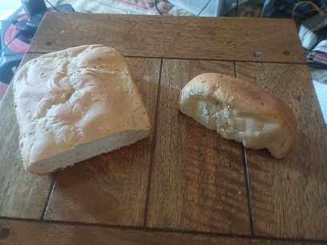

makes 10 small loaves 39p each with milk powder and oil left over
Sour Dough Bread is cheap to make, make as much or as little as you like. Take the mess and hard work out of it by using a breadmaker for the mixing and kneading.
email: davewhit444@gmail.com
makes 10 small loaves 39p each with milk powder and oil left over